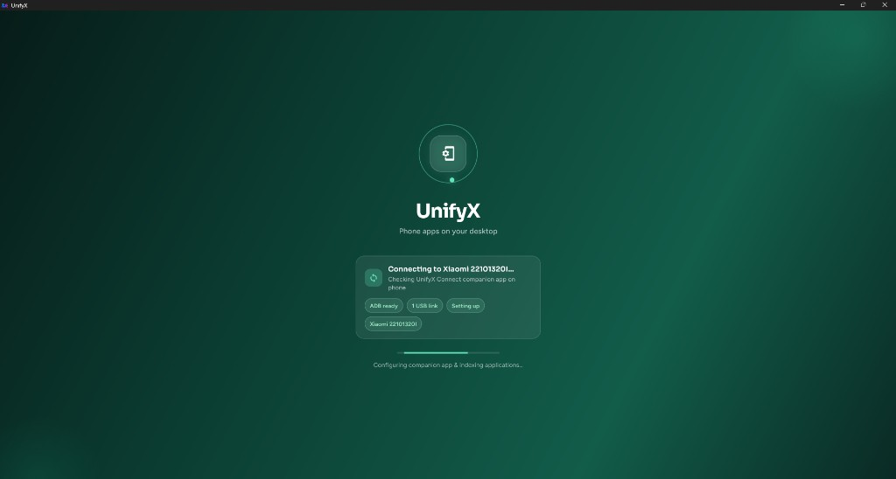
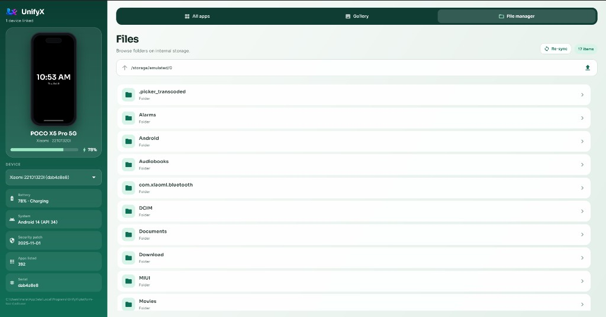

UnifyX
Your Android phone,
from your Windows desk.
Manage apps, move files, install APKs, and mirror the screen over USB — private, local, and free of ads.
The real product
Everything you need between PC and phone.
One Windows app. Bundled ADB and scrcpy. No accounts, no cloud sync, no ads.
See every app. Launch any one.
Browse user and system apps with real icons and names. Search, export APKs, install singles or split packages, uninstall with verification.

Connect once. Stay in sync.
Plug in over USB, accept debugging, and UnifyX Connect indexes apps in the background — with live status for ADB, device link, and setup.
Gallery and files, both ways.
Browse internal storage, open folders, upload from the PC, and pull media back. Progress stays visible so large transfers never feel silent.

Three steps. Then you’re in.
- 01 Install UnifyX One Setup.exe — ADB and scrcpy travel with it.
- 02 Enable USB debugging Developer options on the phone, accept the prompt.
- 03 Plug in and sync UnifyX Connect indexes apps in the background.
Optional
Want it wireless? Use Tailscale.
Keep UnifyX untethered after a one-time USB setup. Tailscale links your PC and phone on a private network — then ADB runs over that IP.
-
01
Install Tailscale on both devices Sign in on your Windows PC and Android phone so they share the same Tailscale network.
-
02
Connect once over USB Plug the phone in, accept USB debugging, and confirm UnifyX sees the device.
-
03
Enable ADB over TCP/IP Open Command Prompt and run:
adb tcpip 5555 -
04
Unplug, then connect the Tailscale IP Disconnect USB. In Tailscale, copy your phone’s IP, then run:
Replaceadb connect PHONE_TAILSCALE_IP:5555PHONE_TAILSCALE_IPwith the address shown in Tailscale for your phone. -
05
Open UnifyX and enjoy wireless Refresh devices in the app — manage apps, files, and mirroring without the cable.
Local by design.
Traffic stays on your USB cable. No marketplace, no analytics wall, no “upgrade to remove ads.” Just a tool that respects the desk you work at.
- Bundled platform-tools + scrcpy
- Companion app for icons and media
- Split APK install and app export
- Works offline once installed
Get UnifyX for Windows
Self-contained installer for Windows 10 and 11. Drop it on another PC and it just works.
Download UnifyX-Setup-1.0.0.exe~45 MB · x64 · includes ADB, scrcpy, and UnifyX Connect